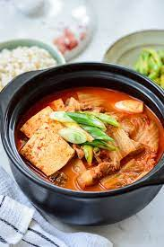

Kimchi-jjigae

Description
Kimchi jjigae (김치찌개) also known as kimchi stew or kimchi soup is probably the most common way of consuming some
aged kimchi. It is a such a staple food in Korean households that typically Koreans would eat it at least once
or twice a week if not more.
It is one of the most-loved of all the stews in Korean cuisine. It’s a warm, hearty, spicy, savory,
delicious dish that pretty much everyone loves.
Ingredients
- ½ cup rice
- 1 teaspoon each of sesame oil and canola oil
- ¼ cup onion, chopped
- 2 cloves garlic, minced
- 2 ounces pork loin, diced
- ½ cup kimchi and kimchi juice, separated
- 1 tablespoon gochugaru flakes (or substitute a blend of paprika and cayenne pepper in equal parts)
- 1 tablespoon gochujang (or use Sriracha sauce or ketchup mixed with hot sauce or cayenne pepper)
- 2-3 cups water
- 1 anchovy seasoning pack
- 1 tablespoon Dasida (or use beef or chicken stock powder or fish sauce, to taste)
- 2 tablespoons green onion, chopped (about 1 medium green onion)
- 1 package Enoki mushrooms, sliced (or use an 8-ounce package of portobello, button, oyster or shiitake
mushroom; white mushrooms also work)
- 1 egg
- 1 11-ounce package soft tofu
Instructions
- Rinse rice under cool water, then cook following package directions.
- In another pot, heat oils together, then add in onions, garlic, pork, gochugaru flakes, kimchi and zucchini,
if using. Cook until fragrant.
- Add water, stock powder and kimchi juice. Bring stew to a boil for 5-10 minutes.
- During the last five minutes of cooking, add the mushrooms and tofu. Cook until both are tender. Add the egg
last, and poach it until just set in the hot broth (or cook it longer if you prefer a firmer egg.)
- Top with green onions and serve with rice.